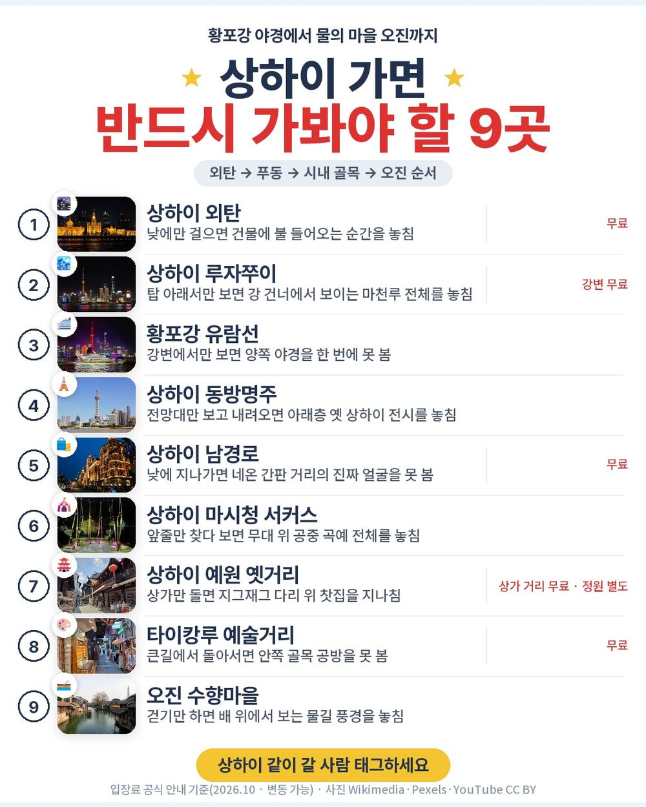
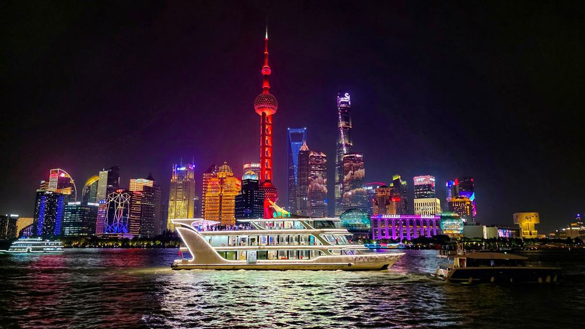
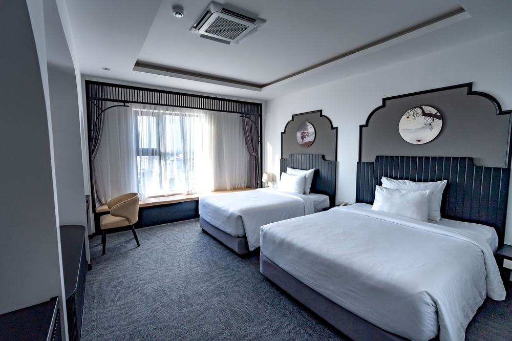
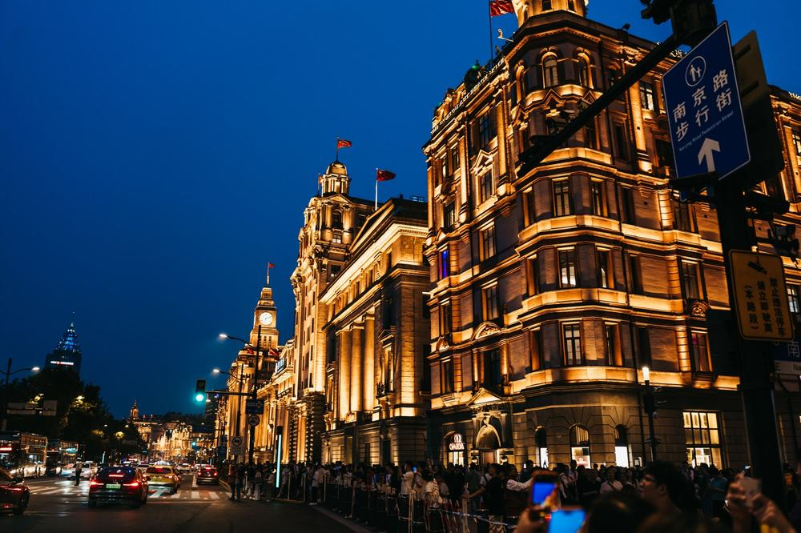
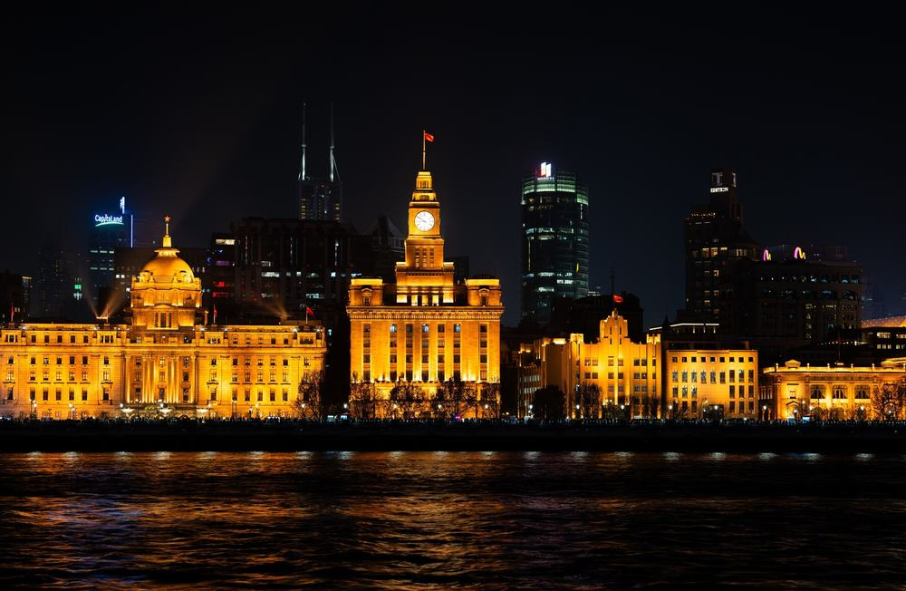
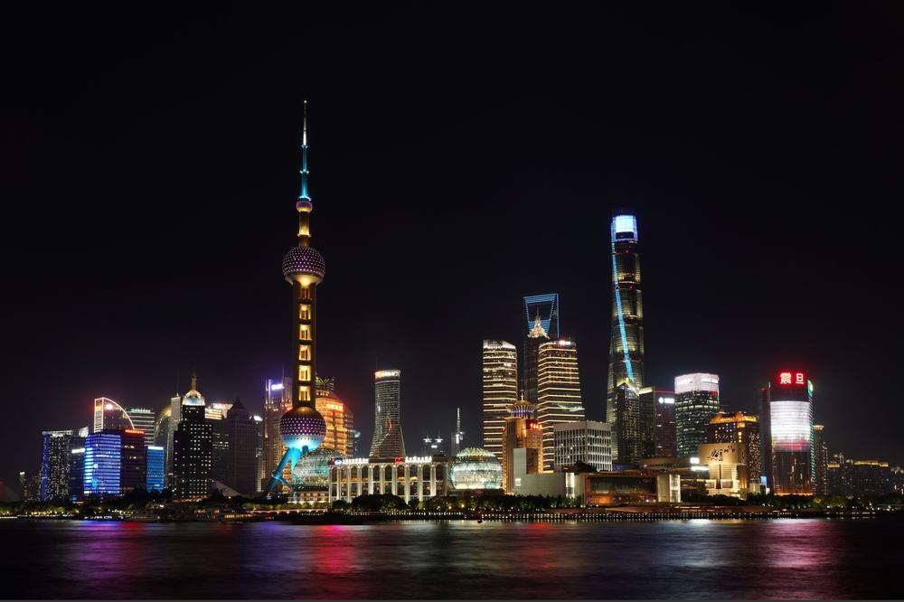
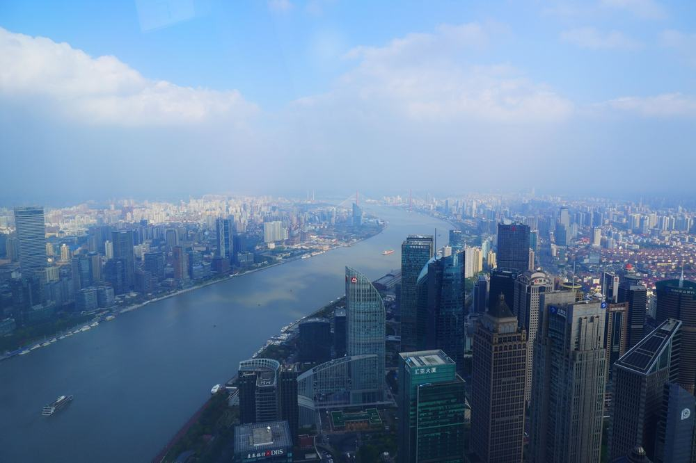
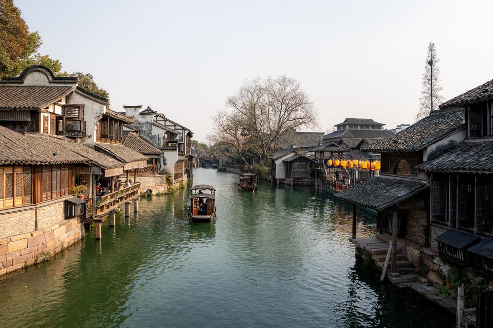
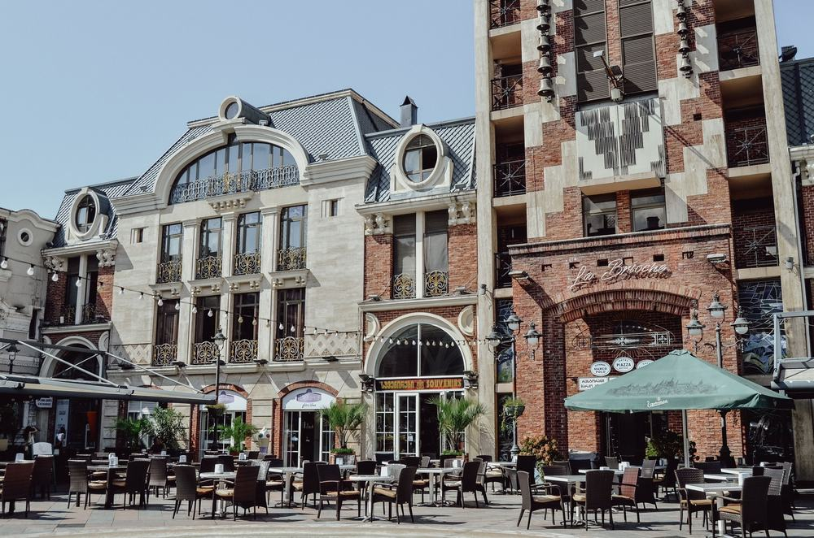
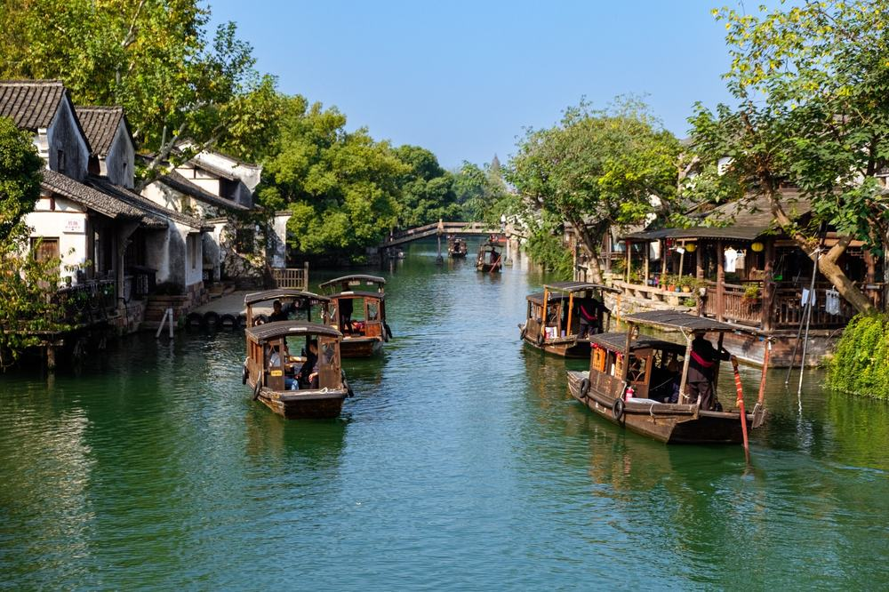

상하이 패키지를 보다 보면 값은 싼데 현지에 가서 선택관광 목록을 받는 상품이 많음. 유람선 따로, 전망대 따로, 서커스 따로 내다 보면 처음 본 값이 의미가 없어짐.
그러다 노랑풍선 상하이·오진 4일 상품을 봤음. 쇼핑센터 방문이 0회이고 선택관광도 없음. 대신 보통 따로 내는 네 가지가 처음부터 들어 있음.
결론 — 추천. 노쇼핑·노옵션에 황포강 유람선·동방명주 전망대·마시청 서커스·오진 뱃놀이 포함, 호텔은 3연박. 다만 버스 왕복 4시간이 힘든 분(3일차 오진), 밤에 시내를 혼자 걷고 싶은 분, 자유시간을 길게 원하는 분은 아님.
94만 9천원에 무엇이 들었고 현지에서 얼마가 더 나가는지 원문을 하나씩 대조해 봤음.
| 항목 | 내용 |
|---|---|
| 가격 | 1인 949,000원 (2인 1실 기준 · 10월 출발) |
| 여행사 | 노랑풍선 |
| 항공 | 중국동방항공 직항 · 인천 16:15 → 푸동 17:20 / 푸동 14:05 → 인천 17:25 |
| 숙소 | 코트야드 바이 메리어트(쿤산) 또는 동급 3연박 |
| 일정 | 3박 4일 · 전용 버스 · 한국어 가이드 · 식사 7회 |
| 가는 곳 | 외탄 · 황포강 유람선 · 동방명주 · 남경로 · 마시청 서커스 · 판롱티엔디 · 예원 · 타이캉루 · 오진 · 임시정부청사 · 신천지 |
▶ 내 출발일 오늘 기준 요금 확인 (제휴 링크 · 예약 시 수수료를 받으며 가격은 같습니다)
▶ 10월 10일 기준 상하이 패키지 최저 67만 9천원부터 — 출발일별 값 한 화면에: 비교 페이지
| 순서 | 다루는 것 | 한 줄 결론 |
|---|---|---|
| 1 | 구성 뜯어보기 | 따로 내던 체험 4가지 포함, 현지 경비 400위안 |
| 2 | 일정 살펴보기 | 버스가 3일차 오진 왕복에 몰려 있음 |
| 3 | 자유여행 VS 패키지 | 직접 짜면 85만원 | 차이 약 18만원에 동선·가이드·오진 이동을 맡김 |
요약 — 직항 왕복·호텔 3박·식사 7회·관광 12곳·전용 버스·여행자보험이 들어 있음. 현지에서 반드시 내는 돈은 가이드·기사 경비 1인 400위안이고, 쇼핑과 선택관광은 없음.

포함 항목을 줄로 세우면 이럼.
- 인천–상하이 푸동 직항 왕복 + 세금
- 코트야드 바이 메리어트(또는 동급) 3박 — 2인 1실
- 식사 7회 — 유린기·탕수육·삼겹살 무제한·마파두부 특식 포함
- 관광 12곳 입장
- 전용 버스 · 한국어 가이드 · 여행자보험
눈여겨볼 건 보통 현지에서 선택관광으로 붙는 네 가지가 기본 포함이라는 점임. 황포강 유람선, 동방명주 전망대와 역사진열관, 마시청 서커스, 오진 서책 뱃놀이. 여행사 안내로는 합쳐서 200달러어치이고, 남경로에서 커피나 음료도 한 잔씩 줌.
출발일별 요금 확인하기
https://naver.me/xoGiGzWo

예정 호텔은 코트야드 바이 메리어트 쿤산, 또는 같은 급 호텔임. 확정은 출발 이삼일 전에 알려줌.
좋은 점은 3연박이라는 것. 매일 아침 캐리어를 다시 쌀 일이 없음. 조식은 세 번 다 호텔에서 먹음.
알고 갈 점도 있음. 쿤산은 상하이 시내 한가운데가 아님. 밤에 혼자 외탄까지 걸어 나가는 건 어렵다고 보는 게 맞음. 대신 야경은 첫날 유람선에서 충분히 봄.

쇼핑센터 방문은 0회. 일정표에 단체 쇼핑 일정이 없음.
선택관광도 없음. 위에 적은 유람선·전망대·서커스·오진 뱃놀이가 이미 상품가 안에 있음.
| 항목 | 금액 | 비고 |
|---|---|---|
| 가이드·기사 경비 | 약 160,000원 | 1인 400위안 × 2 · 현지 지불 (1위안 약 199원) |
| 판롱티엔디 저녁 | 약 40,000원 | 자유시간 중 불포함 끼니 (추정) |
| 선택관광 | 0원 | 없음 |
| 싱글룸 (혼자 쓸 때) | 150,000원 | 2인 1실이면 0원 |
| 합계 (2인) | 약 200,000원 | 상품가 189만 8천원 + 20만원 = 약 210만원 |
한 사람으로 치면 약 105만원임.
1절 자주 나오는 질문
Q. 가이드 경비는 따로 내나요?
A. 냄. 1인 400위안을 현지에서 냄. 성인·소아 같은 금액이고 상품가 밖임. 위안화로 챙겨 가면 됨.
Q. 출발이 확정된 상품인가요?
A. 상품명에 "출발확정"이 붙어 있지만 원문 출발 상태는 확정이 아님. 예약할 때 그 날짜가 확정인지 물어보는 게 좋음.
Q. 인솔자가 같이 가나요?
A. 안 감. 인천공항 출국 수속은 직원이 돕고, 현지에선 한국어 가이드가 처음부터 끝까지 함께함.
요약 — 1일차 외탄 야경·유람선, 2일차 동방명주·남경로·서커스·판롱티엔디, 3일차 예원·타이캉루·오진, 4일차 임시정부청사·신천지 뒤 오후 귀국. 버스가 3일차 오진 왕복에 몰려 있음.

| 일차 | 가는 곳 | 식사 | 숙소 |
|---|---|---|---|
| DAY 1 | 인천 16:15 출발 → 푸동 17:20 → 외탄 야경(차창) → 황포강 유람선 | 중 기내식 · 석 현지식 | 코트야드 쿤산 또는 동급 |
| DAY 2 | 동방명주 전망대+역사진열관 → 남경로 → 마시청 서커스 → 판롱티엔디 자유시간 | 조 호텔식 · 중 현지식 · 석 불포함 | 같은 호텔 |
| DAY 3 | 예원 옛거리 → 타이캉루 → 오진 수향마을(약 2시간) → 상해 복귀(약 2시간) | 조 호텔식 · 중 현지식 · 석 한식 | 같은 호텔 |
| DAY 4 | 임시정부청사 → 신천지 → 푸동 14:05 출발 → 인천 17:25 | 조 호텔식 · 중 기내식 | — |
| 일차 | 버스 이동 | 걷기 | 포함 식사 |
|---|---|---|---|
| DAY 1 | 약 1.5시간 | 적음 | 중 기내식 · 석 현지식 |
| DAY 2 | 약 2시간 | 보통 | 조 호텔식 · 중 현지식 |
| DAY 3 | 약 4.5시간 | 보통 | 조 호텔식 · 중 현지식 · 석 한식 |
| DAY 4 | 약 1.5시간 | 적음 | 조 호텔식 · 중 기내식 |
| 합계 | 약 9.5시간 | - | 상품 표기 7회 (기내식 2회 별도) |
요약 — 버스 이동은 4일 동안 약 9.5시간이고, 그중 4.5시간이 DAY 3임. 걷는 양은 DAY 2·3이 보통 수준임.

오후 비행기라 아침이 여유로움. 푸동공항에 현지 시각 다섯 시 20분쯤 내려 시내로 들어감.
들어가는 길에 외탄 야경을 차창으로 보고 황포강 유람선을 탐. 한쪽은 옛 은행 건물, 건너편은 루자쭈이 마천루라 양쪽이 다 볼거리임.

아침엔 동방명주. 1994년에 다 지은 468m 방송탑이고, 전망대에 오른 뒤 아래층 역사진열관에서 옛 상하이 거리를 실물 크기로 꾸민 전시를 봄.
그다음 남경로에서 커피나 음료 한 잔, 오후엔 마시청 서커스 극장에서 곡예 공연을 봄. 저녁은 2023년에 문을 연 물길 거리 판롱티엔디에서 자유시간. 이 끼니만 상품가 밖임.

오전에 예원 옛거리와 타이캉루 예술거리를 걷고, 버스로 2시간쯤 가서 오진에 닿음. 서책 구역을 걷고 나룻배를 탐.
돌아오는 길도 2시간이라 이날 버스만 약 4.5시간임. 그날 저녁은 한식이고, 호텔은 그대로라 짐 정리는 없음.

마당로의 대한민국 임시정부청사를 보고, 근처 신천지를 걸은 뒤 공항으로 감. 푸동 14:05 출발, 인천 17:25 도착이라 저녁 전에 집에 들어감.
2절 자주 나오는 질문
Q. 많이 걷나요?
A. 2일차와 3일차가 보통 수준임. 예원·타이캉루·오진이 다 걷는 거리라 편한 운동화를 신는 게 좋음. 오래 걷기가 불편하시면 가이드에게 미리 말해 두면 됨.
Q. 오진까지 얼마나 걸리나요?
A. 일정표 기준 상해에서 편도 약 2시간, 왕복 약 4시간임. 그날 오전엔 예원과 타이캉루를 먼저 봄.
Q. 10월 말 상하이 날씨는 어떤가요?
A. 중국기상국 1991–2020 평년값으로 10월 낮 최고가 23.5도, 11월이 17.8도라 10월 말이면 20도 안팎임. 중국 호텔은 계절과 상관없이 난방이 안 될 때가 있어 잘 때 입을 따뜻한 옷을 챙기라고 안내돼 있음.
요약 — 같은 일정을 직접 짜면 1인 85만원쯤 듦. 패키지는 경비 포함 약 103만원이라 자유여행이 18만원쯤 덜 듦. 그 차이에 오진 왕복 이동, 공항·시내 이동, 가이드, 체험 예약이 들어 있음.

같은 일정을 혼자 짠다고 치고 항목별로 계산해 봄. 10월 말 기준, 2인 1실 1인분임. 환율은 1위안 약 199원으로 잡았음. 항공 말고는 추정치라 근거 열에 적어 둠.
| 항목 | 금액 | 근거 |
|---|---|---|
| 인천–상하이 왕복 항공 | 368,500원 | 패키지와 같은 출발일 직항 (2026-10-10 마이리얼트립 조회) |
| 4성급 체인 호텔 3박 | 180,000원 | 2인 1실 1박 약 600위안의 1인분 × 3 (추정) |
| 식사 7회 | 70,000원 | 패키지 포함 끼니에 맞춤 (추정) |
| 공항 ↔ 시내 왕복 | 20,000원 | 자기부상열차·지하철 또는 택시 (추정) |
| 유람선·전망대·서커스·오진 입장 | 160,000원 | 현지 매표가 합 약 800위안 (추정) |
| 오진 왕복·시내 이동 | 40,000원 | 버스·지하철·택시 실비 (추정) |
| 여행자보험 | 10,000원 | 4일 기준 (추정) |
| 가이드 | — | 자유여행은 없음 |
| 합계 | 약 848,500원 |
직접 짜실 분은 이 날짜 항공권부터 보세요 — https://myrealt.rip/upglb4 (마이리얼트립 제휴 링크)
패키지는 949,000원에 가이드 경비 400위안(약 8만원)을 더해 약 103만원임.
자유여행이 18만원쯤 덜 듦. 감출 이유가 없어서 그대로 적음. 대신 그 18만원으로 사는 게 있음.
- 상하이 시내에서 오진까지 왕복 4시간 이동을 버스가 해결함
- 유람선·전망대·서커스·오진 서책을 표 한 장씩 따로 예약할 일이 없음
- 중국은 지도·결제 앱이 한국과 달라 처음이면 길찾기부터 막히기 쉬움
계산표에 가이드 행이 비어 있는 게 그 뜻임 — 0원이 아니라 살 수 없는 것임. 오진처럼 시내에서 먼 곳이 끼면 차이가 더 체감됨.
| 자유여행이 맞음 | 패키지가 맞음 |
|---|---|
| 상하이 시내만 천천히 볼 것임 | 오진까지 한 번에 볼 것임 |
| 중국 결제·지도 앱이 익숙함 | 앱 설치·결제가 부담 |
| 밤에 시내를 걸어 다니고 싶음 | 밤엔 호텔에서 쉬어도 됨 |
| 비용을 최대한 아끼고 싶음 | 체험 예약까지 맡기고 싶음 |
3절 자주 나오는 질문
Q. 자유여행이 더 싸지 않나요?
A. 계산해 보면 자유여행이 약 85만원, 패키지가 경비 포함 약 103만원임. 18만원쯤 차이인데, 그 안에 오진 왕복과 공항 이동, 가이드, 체험 예약이 들어 있음.
Q. 혼자 가도 되나요?
A. 됨. 다만 싱글룸 사용료 15만원이 붙음.
Q. 비자가 필요한가요?
A. 이 상품은 비자 불필요로 안내돼 있음. 여권 원본은 꼭 챙겨야 함.
정리하면 이럼.
추천함. 94만 9천원에 직항, 같은 호텔 세 밤, 식사 7회. 황포강 유람선·동방명주 전망대·마시청 서커스·오진 뱃놀이까지 들어 있고 쇼핑센터는 안 감. 현지에서 반드시 내는 돈은 가이드 경비 400위안뿐임.
| 맞는 사람 | 안 맞는 사람 |
|---|---|
| 상하이가 처음인 분 | 버스 왕복 4시간이 힘든 분 (3일차 오진) |
| 쇼핑센터가 싫은 분 | 밤에 시내를 혼자 걷고 싶은 분 |
| 새벽 비행기가 싫은 분 | 자유시간을 길게 원하는 분 |
걸리는 점은 상품 흠이라기보다 맞는 사람과 안 맞는 사람을 가르는 조건에 가까움. 부모님 모시고 처음 상하이 가는 거라면 오히려 이 구성이 편함.
오늘 기준 출발일별 요금 보기
https://naver.me/xoGiGzWo
같은 목적지 다른 여행사 패키지, 쇼핑·선택관광·가이드 경비까지 비교
https://pkg-lab.com/go/?q=%EC%83%81%ED%95%98%EC%9D%B4&utm_source=blog&utm_medium=post&utm_campaign=daily
교원투어 오사카 패키지 여행 79만 9천원, 추가금 진짜 없을까?
https://blog.naver.com/robotnady10/224435948759
편한여행사 푸꾸옥 패키지 여행 103만원대, 노쇼핑에 마사지 3번 추가금 진짜 없을까?
https://blog.naver.com/robotnady10/224434946957
이 글에는 네이버·마이리얼트립 제휴 링크가 포함되어 있으며, 링크를 통해 예약하시면 일정 수수료를 받습니다. 가격은 동일합니다. 가격과 구성은 2026년 10월 10일 확인 기준이며 출발일에 따라 달라질 수 있습니다.
▶ 이 상품, 영상으로 보기 (유튜브)
▶ 상하이 패키지 오늘 값 나란히 비교
▶ 같은 목적지 다른 여행사 패키지, 쇼핑·선택관광·가이드 경비까지 비교: pkg-lab.com
.jpg){kind=link}